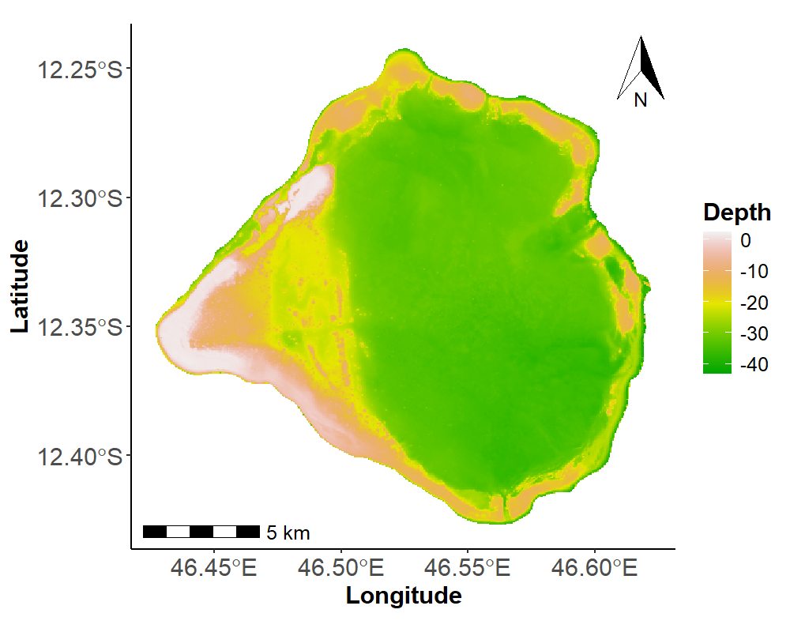
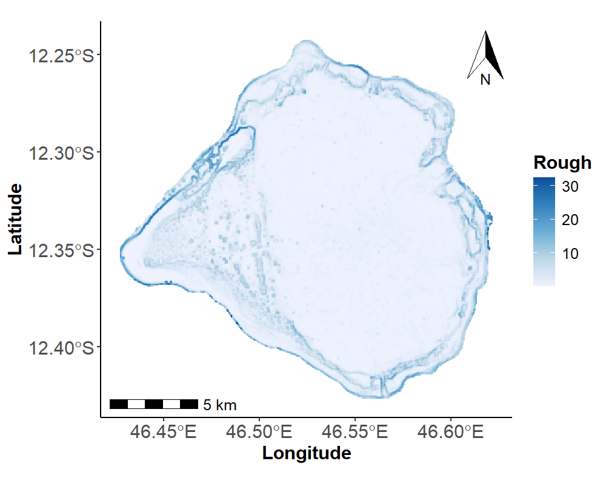
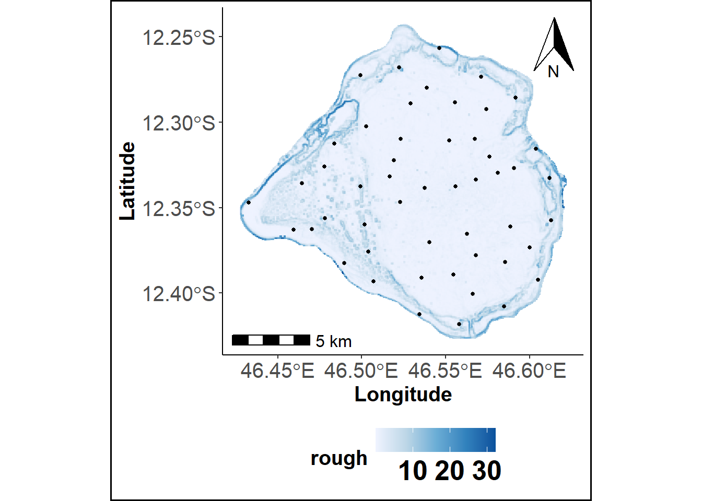
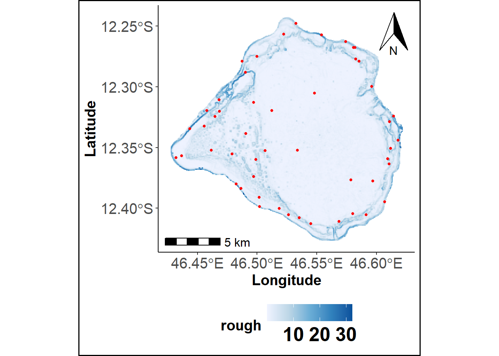

Code
library(raster)
library(sf)
library(sp)
library(ggplot2)
library(ggspatial)
library(ggnewscale)Paul FAYE
This work addresses spatial sampling design through clustering-based approaches. Spatial Coverage Sampling using K-means (scsKM) follows the method implemented in the spcosa R package, applying k-means clustering to spatial grid cell centers to ensure uniform coverage. Building on this, we introduce two new methods: scsCLARA, which uses the CLARA algorithm for spatially balanced sampling, and cdCLARA, which extends this approach by incorporating environmental complexity via geomorphological variables such as depth and roughness. These developments offer flexible tools for efficient and adaptive spatial sampling.
To begin, users are required to download and install the following R packages, which are essential for running the analysis. Additionally, the following functions must be sourced from the provided repository on Zenodo. These functions are available for download, and users can access them through the following link: https://doi.org/10.5281/ zenodo.8436795
After installation, ensure that the packages are loaded and the functions are sourced correctly in your R environment before proceeding with the analysis.
The study utilized a high-resolution (50 m) raster dataset containing geographic coordinates (longitude and latitude) alongside a set of environmental predictors to describe the geomorphological characteristics of the study area (Roos et al. 2017; Faye et al. 2024). Geographic coordinates are used as covariates in the spatial coverage sampling while two key variables - Depth and surface roughness- were subsequently used as covariates in the complexity-dependent sampling approach (Wilson et al. 2007; Faye et al. 2024).
load("./sysdata.rda")
Terrain_Attr_50 = terra::rast("50m_rast_Attr2.tif")
Terrain_Attr_50_df = as.data.frame(Terrain_Attr_50, xy = TRUE)
names(Terrain_Attr_50_df) = append(c("Longitude", "Latitude"), all_predicteurs)
theme_cust = theme(
panel.grid.major = element_blank(),
panel.grid.minor = element_blank(),
panel.background = element_blank(),
plot.background = element_rect(colour = "white", fill = NA, linewidth = 1),
legend.key = element_blank(),
legend.text = element_text(size = 12),
legend.title = element_text(size = 15, face = "bold"),
axis.line = element_line(colour = "black"),
axis.text = element_text(face = "bold", size = 15),
axis.text.x = element_text(face = "bold", size = 15),
axis.text.y = element_text(face = "bold", size = 15),
axis.title.x = element_text(face = "bold", size = 15),
axis.title.y = element_text(face = "bold", size = 15)
)
# Depth (m) Plot
Depth_plot <- ggplot(shp2) +
geom_sf(fill = NA, color = NA) +
geom_tile(data = Terrain_Attr_50_df,
aes(x = Longitude, y = Latitude, fill = Prof_Moyenne)) +
scale_fill_gradientn(
colours = terrain.colors(100),
na.value = "white",
name = "Depth"
) +
annotation_scale(location = "bl", text_cex = 1) +
annotation_north_arrow(
location = "tr",
which_north = "true",
height = unit(1.5, "cm"),
width = unit(1, "cm")
) +
theme_cust
png("Geyser_depth.png", width = 1000, height = 800, res = 150)
print(Depth_plot)
invisible(dev.off())
# Roughness Plot
Roughness_plot <- ggplot(shp2) +
geom_sf(fill = NA, color = NA) +
geom_tile(data = Terrain_Attr_50_df,
aes(x = Longitude, y = Latitude, fill = rough)) +
scale_fill_gradientn("Rough", colours = RColorBrewer::brewer.pal(n = 5, name = "Blues"), na.value = "gray")+
annotation_scale(location = "bl", text_cex = 1) +
annotation_north_arrow(
location = "tr",
which_north = "true",
height = unit(1.5, "cm"),
width = unit(1, "cm")
) +
theme_cust
png("Geyser_rough.png", width = 1000, height = 800, res = 150)
print(Roughness_plot)
invisible(dev.off())

The scsKM function selects sampling locations uniformly across the study area by applying the k-means clustering algorithm to the cells of a regular spatial grid (Hartigan 1975). The clustering is performed using the spatial coordinates of the grid cell centers, aiming to minimize the Mean Squared Shortest Distance (MSSD) between these centers and the corresponding cluster centroids (Royle and Nychka 1998). This approach ensures an approximately equal-area partitioning of the study region (Brus 2019). For advanced customization and related functionality, users are referred to the spcosa R package.
scsCLARA function computes a SCS using the CLARA algorithm instead the K-means algorithm (Kaufman and Rousseeuw 1975). Like in scsKM, spatial coordinates of cells centers of a raster grid are used as variables. DBM at any resolution can be used as individuals which are then grouped into \(k\) clusters. Clusters centroids are returned and correspond to sampling locations.
# Spatial Coverage Sampling using CLARA
pvtscscl = scsCLARA(data = Terrain_Attr_50_df, var=c("Longitude", "Latitude"), iter=1, sampsize=50, disT="euclidean")
pvtscscl$Method= "SCS-CLARA"
scscl_plot = plotPoints(pvtscscl, Terrain_Attr_50_df[,c("Longitude", "Latitude", "rough")], Geyser_bathy)
print(scscl_plot)
cdCLARA uses the CLARA algorithm to group DBM’s cells. Unlike scsCLARA, the covariate space is spanned by geomorphologic features. Depth and Roughness are used in the example below. Clusters centroids are returned and correspond to sampling locations.
# Complexity-dependent sampling using CLARA
pvtcdcl = cdCLARA(data = Terrain_Attr_50_df, var1=c("Longitude", "Latitude"), var2 =c("Prof_Moyenne", "rough") , iter=12, sampsize=50, disT="manhattan")
pvtcdcl$Method= "CDS"
cds_plot = plotPoints(pvtcdcl, Terrain_Attr_50_df[,c("Longitude", "Latitude", "rough")], Geyser_bathy)
print(cds_plot)